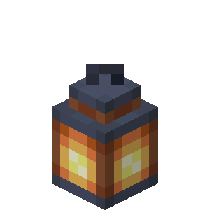
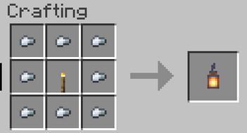

mesa de crafteo con pepitas de hierro y una antorcha
mesa de crafteo con pepitas de hierro y una antorcha
El farol es un bloque usado para iluminar las constucciones o espacios oscuros.
Los foroles se consiguen en una mesa de crafteo con pepitas de hierro y una antorcha

Los faroles tienen dos variantes